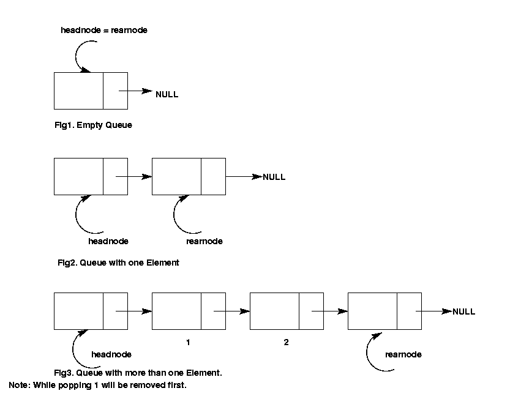

| Document id | : | ITS-MDD-CDSU_TSQUEUE-001 |
| Document name | : | Thread Safe Queue (CdSuTsQueue) Module Design Document |
| Author(s) | : | Seema Chandak, Vijaya Kumar |
| Contributor(s) | : | |
| Approved By | : | Prakash R |
| Document Source | : | Internet Telephony Group, C-DOT, Bangalore |
| Copyright © 2004 by C-DOT. All rights reserved. Contents of publication may not be reproduced in any form without permission from C-DOT. |
| Document History | ||||
|---|---|---|---|---|
| Version No | Revised By | Revised On | Approved By | Remarks |
| Draft 1 | Seema Chandak | Jun 3, 2003 | Prakash R | |
| Draft 2 | Vijaya Kumar | Aug 18, 2004 | Shivali Mittal | Test cases for Copy Constructor is added. |
| Draft 3 | Vijaya Kumar | Apr 27, 2006 | Bluemax Stephen | Bug bugzilla/240 has been fixed. |
| |
|
|
|
|
| |
|
|
|
|
1.0 Introduction
1.1 Purpose and Scope
1.2 Acronyms, Abbreviations and Definitions
1.3 References
2.0 Module Description
2.1 Design goals and constraints
2.2 Properties
2.3 Responsibilities
2.4 Functionalities
3.0 Decomposition Description
4.0 Resource usage
5.0 Design Considerations
5.1 Simple Queue Vs ThreadSafe Queue.
6.0 Issues
7.0 Processing/Algorithm/Pseudo code/STD/Statecharts
8.0 Data Structures Required
9.0 Messages Received by module
10.0 Messages Transmitted by module
11.0 Test cases
Appendix
This document gives the design of CdSuTsQueue. CdSuTsQueue is implemented as a list. It supports functions like insertion of elements, removal of elements, checking whether the queue is empty or full. It is a thread safe queue. The queue as we all know works on FIFO i.e. First In First Out basis. It provides an iterator to traverse through the queue.
This document provides the design details of CdSuTsQueue. The section 2 of the document gives design goals and constraints, properties, responsibilities and functionalities of the module. Section 3 gives the class diagram, its member functions and attributes. Later sections give the algorithms, data structures, etc.
| STL | : | Standard Template Library |
| [stl] | : | Designing Components with the C++ STL, Breymann, 1998, Addison Wesley Longman Limited. |
| [dp] | : | Design Patterns, Elements of Reusable Object-Oriented Software, Gamma et al, 1995, Pearson Education, Inc. |
None.
None.
The following are the methods/functions provided by the list.
This section provides the classes, entities, channels and messages.
The class diagram for CdSuTsQueue is given below.
+-----------+ +-----------+
|CdSuTsQueue| | Iterator |
+-----------+ +-----------+
| |<----------------| |
| | | |
+-----------+ +-----------+
3.1.1 CdSuTsQueue
CdSuTsQueue class has been implemented with the help of a simple list.
3.1.2 IteratorIterator class defines an iterator for traversing the queue. It keeps tracks of the current element of the list.
The memory usage of the each data structure is given below.
| Entity | Memory usage | CdSuTsQueue | sizeof (pthread_mutex_t) + sizeof (sem_t) + 8 bytes + 16 bytes for headNode and rearNode if value is of 4 bytes. | Node | 8 bytes, if the size of value is 4 bytes. |
|---|---|
| Iterator | 4 bytes |
In Linux, sem_t = 16 bytes and pthread_mutex_t = 24 bytes. For example, if the queue contains 100 elements of size 4 bytes each, the total memory usage is = 64 + (8*100) = 864 bytes, leaving the iterator.
The queue is implemented as a template to give the flexibility to specify the type of queue element while creating the queue.
Simple Queue Vs Thread Safe QueueIn a simple queue only one thread is the owner of the queue and it adds and pops from the queue. But when multiple threads have access to the queue then a thread safe queue is required. The data structure of the queue is mutex protected, so that two threads do not simultaneously act on the data structure and corrupt it. Again both blocking and non-blocking pop function call is required. To introduce this feature semaphores are used. Whenever one thread adds something to the queue the semaphore count is increased. Simultaneously other thread can be waiting for addition in the queue. The other thread can be made to make a blocking wait or a non blocking wait. Blocking waits increase the efficiency by not unnecessarily using the CPU time.
By using mutex and semaphore we are using 64 bytes of more memory but are saving CPU time and getting thread safe performance.
| Method | Description |
|---|---|
| bool add (const KeyType item) | Insert a new element. |
| bool popBlocking (KeyType& item) | Removes the first inserted element from the queue. The function is a blocking call. |
| bool popNonBlocking (KeyType& item) | Removes the first element from the queue. The function is a non blocking call. |
| bool full () | Returns true if the queue is full and false otherwise. |
| bool empty () | Returns true if the queue is empty and false otherwise. | unsigned int getSize () | Returns the size of the queue. |
| CdSuTsQueue::iterator begin () | Returns an iterator pointing to the beginning of the queue. |
| CdSuTsQueue::iterator end () | Returns an iterator pointing to the end of the queue. |
| Method | Description |
|---|---|
| ValType& operator* () | Dereference operator. Returns the element at the current iterator position. |
| CdSuList::iterator& operator++ () | Preincrement operator. Iterator points to the next position. |
| CdSuList::iterator operator++ (int) | Postincrement operator. Iterator points to the next position. |
| bool operator== (const iterator&) | Returns true if two iterators are equal, else false. |
| bool operator!= (const iterator&) | Returns true if two iterators are not equal, else false. |
A brief description of the CdSuTsQueue API is given below:
CdSuTsQueue<int> queue;
queue.add (1); queue.add (2); queue.popBlocking (1); queue.popNonBlocking (2);
CdSuTsQueue<int>::iterator iter;
iter = queue.begin ();
iter++;
int num = *iter;7.4 Algorithm
The queue is implemented as a simple list with a headnode and a rearnode to keep track of the elemented inserted first and last.
The following diagrams shows an empty queue, queue with one element and queue after adding an element to the front.

7.5 Statechart DiagramNone.
The methods and attributes of the CdSuTsQueue Iterator classes are given below.
8.1 CdSuTsQueue class
template <class KeyType>
class CdSuTsQueue
{
Public methods
CdSuTsQueue (unsigned int maxqsize);
CdSuTsQueue (CdSuTsQueue& queue);
~CdSuTsQueue ();
bool add (const KeyType item);
bool popBlocking (KeyType& item);
bool popNonBlocking (KeyType& item);
bool full ();
bool empty ();
unsigned int getSize () { return (size); };
Protected members
bool ifull ();
bool iempty ();
Private members
pthread_mutex_t qMutex;
sem_t qSem;
struct Node
{
KeyType value;
Node *next;
};
Node *headNode;
Node *rearNode;
unsigned int maxsize;
unsigned int size;
Public methods
class iterator
{
public:
iterator (Node* init = NULL);
KeyType& operator* ();
const KeyType& operator* () const;
iterator& operator++ ();
iterator operator++ (int);
bool operator== (const iterator& iter) const;
bool operator!= (const iterator& iter) const;
private:
Node* current;
friend class CdSuTsQueue;
}; // iterator
iterator begin () const;
iterator end () const;